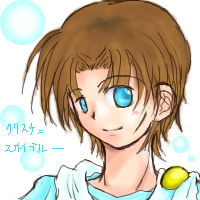
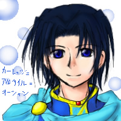

数多の歌声が合わさり紡ぐ 奇跡
彼らの光る、この空の名
“星空の奇跡色。”
ようこそ、この空のもとへ。

→ What's This Site ?
◆ 管理人、星詩里音（ほしうたりおん）の運営する、個人趣味全開な二次創作サイトです。
なので、各関連会社様とは一切関係ありません。
マリオ（むしろ四勇者）とメテオスが中心ですが、最近はサイト擬人化も熱い。
擬人化の占める割合がそろそろ１０割に届きそうです。
◆ フリーイラスト等を除き、基本的に各文章・画像の無断コピー＆転載は禁止です。
どうしても…という場合は、管理人に一度連絡をお願いします。
あ、個人的な観賞目的の保存なら大丈夫ですよ（´ｖ｀*
◆ 相互リンクについては、リンクコーナーをご覧下さいな。
◆ 比較的世界観の自由なメテオスはともかく、紙マリオにもオリキャラが乱入しまくってます。
原作のイメージを大切にしたい方はご注意下さい。
ちなみに以下はこのサイト内でよく見かけるペパマリ内のオリキャラ２名簡易紹介。
もっと詳しい紹介は「四人の勇者の物語」特設ページ内のキャラ紹介からどうぞ。
書き直しにあたって、ちょっと今はキャラ設定ページを下げています。その内復活させますので、しばしお待ちくださいー。
|  |
クリスケ＝スカイブルー １４歳 一人称…オイラ 〝ペパマリの千年前の世界〟に産み落とされたオリキャラ。 （千年前→テイルワースとＯＰが語るあの時代） よって、紙マリオのキャラ達とはほぼ関わりがありません。 種族はクリボー（イラストは擬人化）、特徴は左頬の傷跡。 サイト内の長編連載、「四人の勇者の物語」の主人公。 |
|  |
カーレッジ＝アルタイル＝オーシャン １７歳 一人称…私 クリスケと同じ時代に存在するオリキャラ。 ペパマリＯＰで女王に壊されていた、あの街の王様です。 「四人の勇者の物語」では、クリスケの相棒的存在。 種族はキノピオ、イラストはやっぱり擬人化バージョン。 |
◆ ちなみに、もう一つ一次創作中心のサイトを運営していたりもします。
そっちの方では（今のところは）こちらのサイトの話題は出さないでやってください＾＾；

管理人プロフィール
「星詩里音（ほしうた りおん）」 もう一つ使っていたＨＮは「シャイン」です。
多分女子（むしろ腐女子） Ｏ型 千葉在住 一応大学生（文学部）。
吟遊詩人っていいよね。